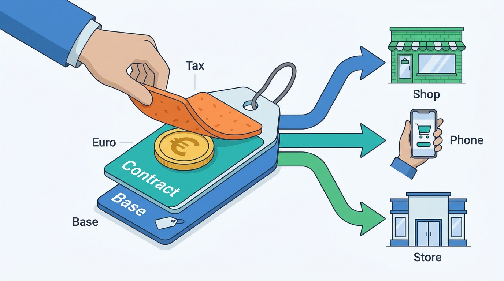

Part II — CATALOG: Products, Prices and Promises
What Does It Cost? Price Lists, Contract Prices, Currencies and Tax
AI-assisted: researched and written with Claude Code and Codex; illustrations generated with Gemini and OpenAI image tools. How this works
